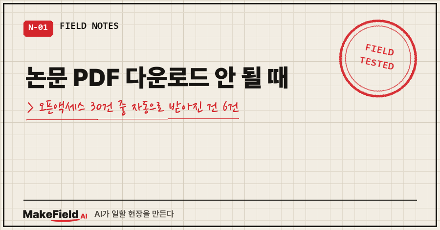
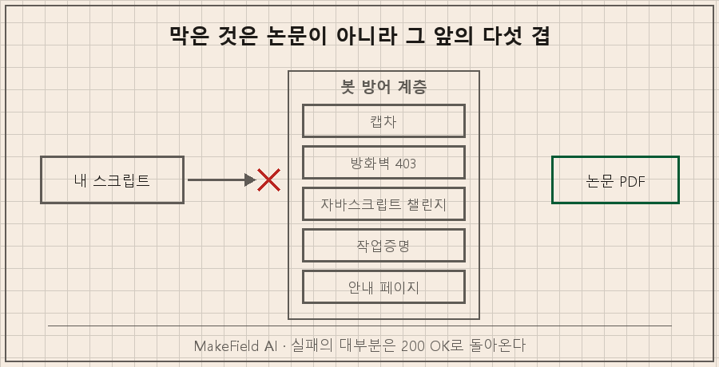
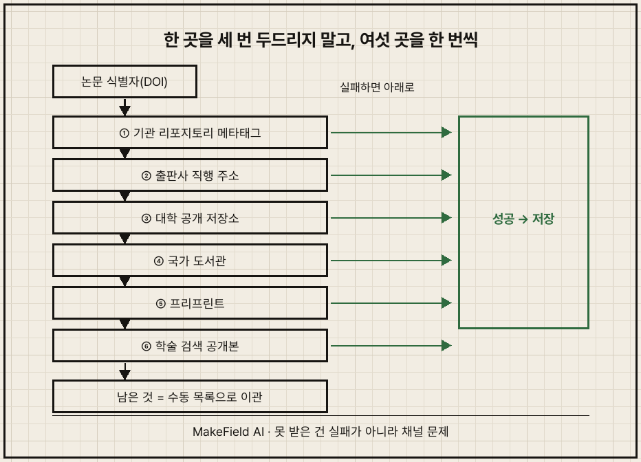
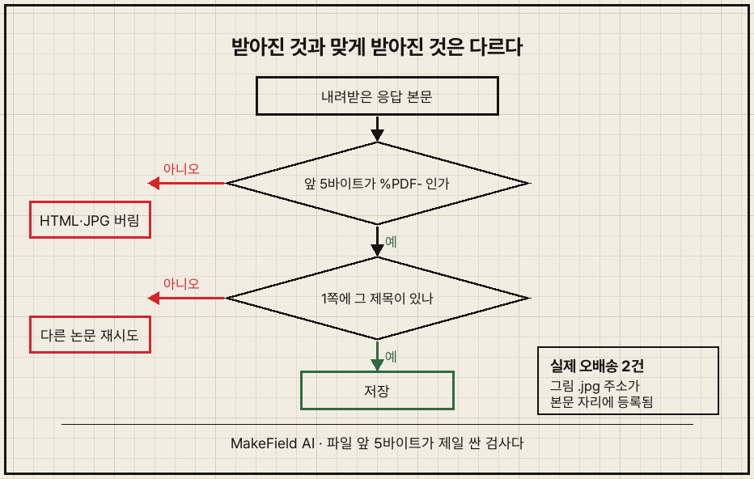

논문 PDF 다운로드를 서른 건 걸어두고 다른 일 하다 돌아왔는데, 폴더에 파일이 여섯 개 있었어요.
전부 오픈액세스로 표시된 것들이었습니다. 돈 내고 볼 필요 없다고 검색 API가 직접 알려준 논문들이요. 그런데 자동으로 받아진 건 6건이고, 나머지 24건은 각자 다른 이유로 막혀 있었습니다.
먼저 답부터 적을게요.
논문 PDF 다운로드가 안 되는 건 대체로 권한 문제가 아니라 경로 문제입니다. 오픈액세스는 "누구나 볼 권리가 있다"는 표시지, "스크립트가 바로 받을 수 있다"는 뜻이 아니거든요. 출판사 페이지 하나만 두드리다 실패하는 것과, 같은 논문의 다른 사본을 순서대로 찾아보는 건 결과가 꽤 다릅니다.
2026년 9월 기준, 윈도우 PC에서 파이썬으로 문헌을 긁어모으는 상황 얘기예요. 공개 보고서나 표준 초안을 모을 때도 구조는 똑같습니다.
1. 오픈액세스인데 왜 막힐까요
막힌 24건을 열어보니 실패 사유가 다섯 종류로 갈리더라고요. 응답만 보면 다 똑같은 실패인데 실제 화면은 전부 달랐습니다.
# 실제 걸린 다섯 유형을 한 화면에 모아 적은 것입니다
[FAIL] 403 Forbidden — 본문 대신 방어 서비스의 차단 안내 HTML
[FAIL] 200 OK — PDF가 아니라 "사람인지 확인 중" 캡차 페이지
[FAIL] 200 OK — "Preparing to download" 안내 페이지에서 정지
[FAIL] 200 OK — 브라우저에게 계산 문제를 풀리는 대기 화면
[ OK ] 200 OK — %PDF- 로 시작하는 진짜 파일여기서 중요한 걸 알았어요. 실패의 대부분이 200 OK로 돌아옵니다. 서버는 정상 응답을 준 게 맞고, 그 안에 든 게 논문이 아닐 뿐이에요. 상태 코드로 성공 여부를 세면 숫자가 부풀려집니다.
| 막히는 방식 | 화면에 뜨는 것 | 스크립트에 보이는 것 |
|---|---|---|
| 봇 매니저 캡차 | 사람인지 확인하는 체크박스 | 200 OK + 작은 HTML |
| 클라우드 방화벽 차단 | 접근이 거부되었습니다 | 403 |
| 자바스크립트 챌린지 | 잠시 기다려 주세요 | 200 OK + 스크립트만 든 문서 |
| 작업증명 챌린지 | 브라우저가 계산 중 | 200 OK + 대기 화면 |
| 중간 안내 페이지 | 다운로드를 준비 중입니다 | 200 OK + 안내문 |
제 일은 공장 설비 제어 쪽인데, 뭘 만들기 전에 남이 먼저 해둔 자료부터 뒤지는 게 시간의 절반이에요. 사람 손으로 3분이면 되는 걸 스크립트가 못 하고 있던 셈입니다..

2. 우회가 아니라, 다른 사본을 찾는 순서
여기서 방향을 정해야 했어요. 캡차를 뚫을 것인가, 아니면 같은 논문의 다른 공개 사본을 찾을 것인가.
앞쪽은 안 했습니다. 봇 방어 우회는 이용약관 위반이고, 오픈액세스 논문은 애초에 합법 사본이 여러 군데 있는 경우가 많거든요. 그래서 시도 순서를 이렇게 고정했어요.
- 기관 리포지토리의 메타 태그. 대학·연구소 저장소는 문서 페이지
<head>에 PDF 실주소를citation_pdf_url로 적어둡니다. 여기가 제일 잘 열려요. - 출판사가 공식으로 여는 직행 주소. 논문 식별자(DOI)를 끼워 넣으면 본문 파일로 바로 보내주는 형식을 쓰는 곳이 있습니다.
- 대학 도서관 계열 공개 저장소. 저자 최종본이 올라와 있는 경우가 많습니다.
- 국가 도서관 아카이브.
- 프리프린트 저장소. 심사 전 원고라 그림 번호가 다를 수 있어 뒤에 씁니다.
- 학술 검색 서비스의 공개본 필드. 마지막 보루였는데, 앞의 다섯이 다 못 찾은 사본을 여기서 두 건 건졌어요.
1번에서 한 번 크게 헤맸습니다. 메타 태그에 적힌 주소가 /bitstream/uuid.../paper.pdf 같은 상대경로였거든요. 그대로 요청하면 아무 데도 안 닿습니다. 문서 페이지 주소와 합쳐줘야 해요.
# 재구성 예시 — 메타 태그의 PDF 주소는 상대경로일 수 있다
from urllib.parse import urljoin
raw = soup.find("meta", {"name": "citation_pdf_url"})["content"]
pdf_url = urljoin(page_url, raw) # 이 한 줄이 없어서 한참 헤맸습니다여러분은 자료 수집을 자동화할 때 실패한 걸 몇 번까지 재시도해 보시나요? 저는 한 곳을 세 번 두드리는 것보다 여섯 곳을 한 번씩 도는 쪽이 훨씬 많이 건졌어요.

3. 받아진 파일이 PDF가 아닐 수도 있어요
이게 제일 아찔했던 부분입니다.
검색 서비스가 알려준 본문 주소 중에 논문 그림 파일을 가리키는 게 섞여 있었어요. 출판사 이미지 서버의 .jpg 주소가 본문 PDF 자리에 잘못 등록돼 있던 겁니다. 확인한 것만 2건.
그냥 저장했으면 이름은 논문.pdf인데 내용물은 그림 한 장인 파일이 폴더에 앉아 있었겠죠. 열어보기 전까진 확보한 줄 알았을 거고요..
그래서 저장 직전에 두 겹을 넣었습니다.
# 재구성 예시 — 저장 전 2단 검증
if not body.startswith(b"%PDF-"): # ① 파일 앞 5바이트
return "not_pdf"
first_page = extract_text(body, page=1) # ② 1쪽 텍스트에 제목이 있나
if not title_words_found(first_page):
return "wrong_paper"①은 앞 5바이트만 보는 검사예요. PDF는 예외 없이 %PDF-로 시작하니까 HTML이든 JPG든 여기서 전부 걸립니다.
②는 다른 걸 잡습니다. PDF는 맞는데 엉뚱한 논문이 온 경우요. 1쪽 텍스트를 뽑아 제목 단어가 있는지만 봤고, 받은 파일 전량을 이걸로 훑었습니다.
설비 쪽에서 배선 검사할 때 도통만 보고 넘어가면 사고가 납니다. 선은 붙어 있는데 엉뚱한 단자에 붙어 있는 경우가 있거든요. 받아진 것과 맞게 받아진 것은 다른 얘기예요.

따라 하실 수 있게 5단계로
전제: 파이썬 3 + requests. 유료 구독이나 기관 계정 없이, 공개 사본만 대상으로 합니다. 2026년 9월 기준이에요.
- 오픈액세스인 것만 목록으로 뽑습니다. 공개 학술 색인 API에 오픈액세스 조건을 걸어 검색하고, 제목 키워드로 한 번 더 거릅니다.
- 한 논문당 후보 주소를 여러 개 만듭니다. 위 여섯 경로를 순서대로 시도하는 함수 하나면 됩니다.
- 응답 코드가 아니라 내용으로 판정합니다. 200이어도 크기가 몇십 KB면 거의 안내 페이지예요.
- 저장 직전에
%PDF-와 1쪽 제목을 봅니다. 이 두 줄이 오배송을 잡습니다. - 못 받은 건 수동 목록으로 넘깁니다. 저는 17건이 남았는데 전부 브라우저로는 열리는 문서였어요. 지우지 않고 제목과 주소를 표로 만들어 문서 뒤에 붙였습니다.
확인 방법: 받은 파일을 폴더에서 크기순으로 정렬해 보세요. 유독 작은 파일(수십 KB)이 섞여 있으면 논문이 아니라 차단 안내문입니다. 그런 게 하나도 없으면 검증이 도는 거예요.
결과는 자동 16건, 수동 이관 17건. 처음 6건에서 시작한 걸 생각하면 순서 하나 만든 값은 했습니다!
미리 답해두는 질문 셋
Q. 그냥 브라우저로 하나씩 받으면 안 되나요?
됩니다. 저도 17건은 그렇게 넘겼어요. 다만 자동화 목적을 "전부 받기"로 잡으면 실패합니다. 목적은 손으로 처리할 목록을 줄이는 것이에요. 서른 건이 열일곱 건이 되면 그날 저녁에 끝낼 분량이 되죠.
Q. 캡차나 봇 방어를 뚫는 방법은 없나요?
찾지 않았고 권하지도 않습니다. 이용약관 위반이고, 애초에 그 방어는 자동 수집을 막으려고 켜둔 거예요. 오픈액세스 문헌은 합법 사본이 여러 군데 있으니 그쪽을 뒤지는 게 빠르고 안전합니다.
Q. 한 서비스가 "본문 없음"이라고 하면 없는 건가요?
아니더라고요. 사본이 없다고 나온 논문을 다른 검색 서비스에서 찾은 게 두 건 있었어요. 색인마다 수집 범위가 다릅니다. "없다"는 답도 한 곳만 믿지 않는 편이 나아요.
여섯 건에서 멈췄으면 그날 결론은 "자료가 별로 없다"였을 겁니다. 실제로는 자료가 아니라 경로가 없었던 거였고요. 막힌 경로와 뚫린 경로는 makefield.ai에 계속 갱신해 둘게요.
태그: #논문PDF다운로드 #오픈액세스논문 #논문자동수집 #논문다운로드안될때 #PDF다운로드403 #파이썬크롤링 #문헌조사자동화 #OpenAlex #자료수집자동화 #AI자료조사 #AI에게일시키기 #AI결과물검수 #파이썬자동화 #개인AI에이전트 #MakeFieldAI